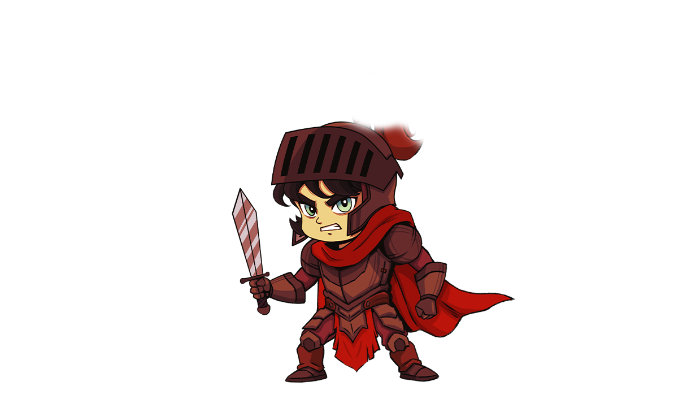
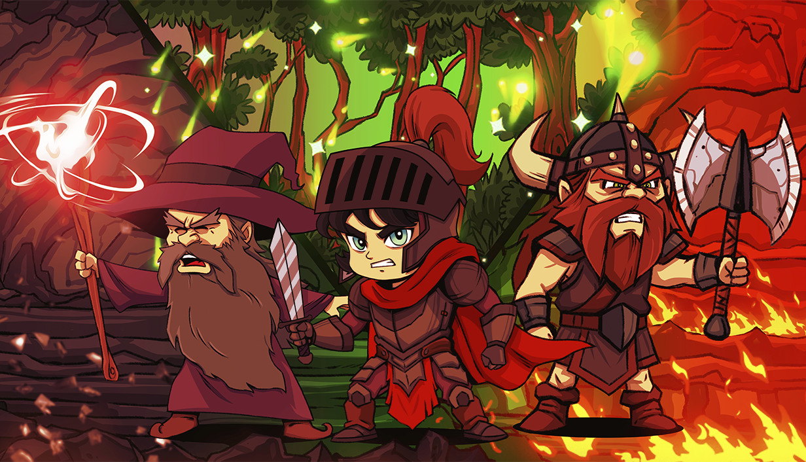
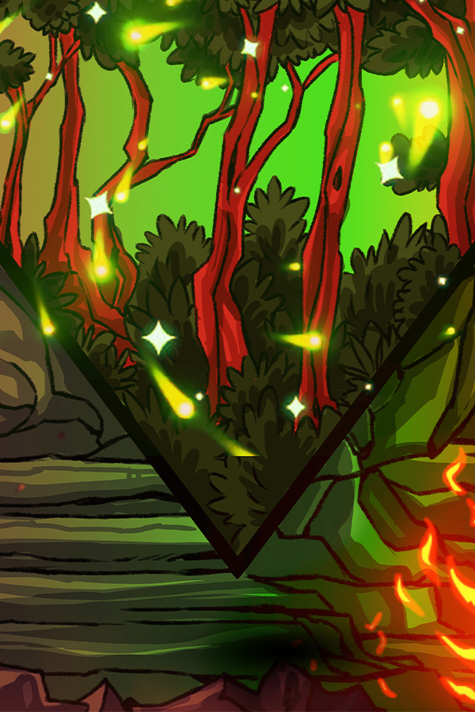
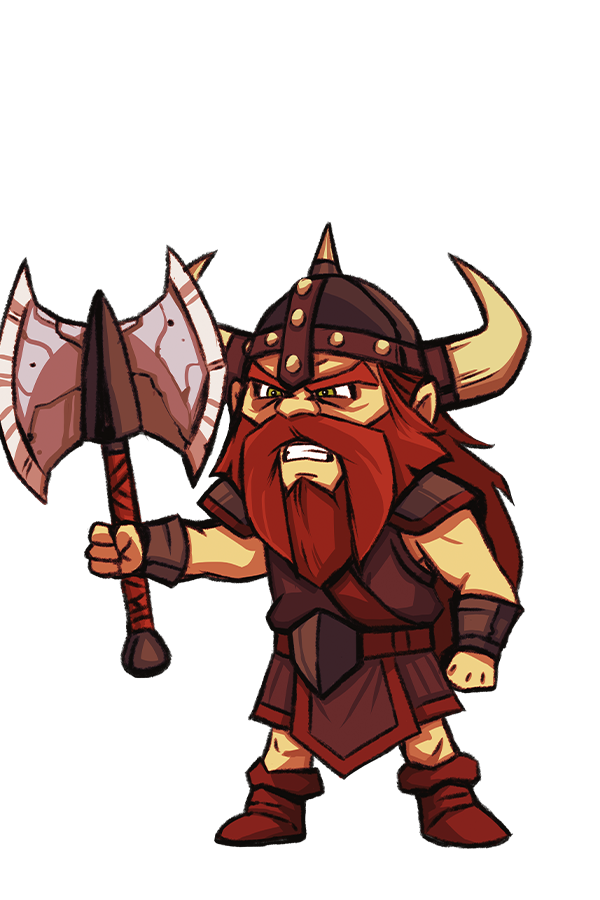
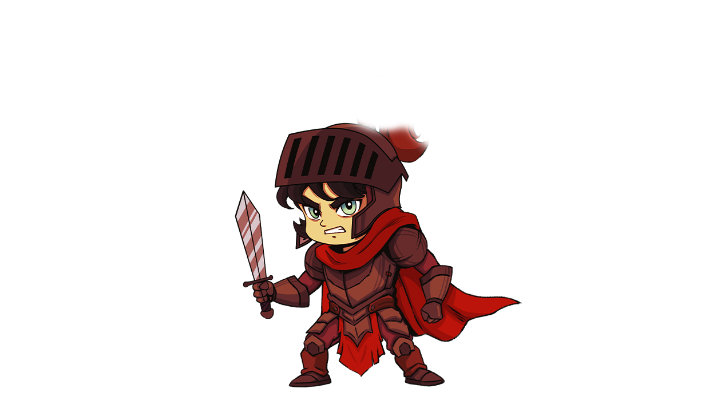
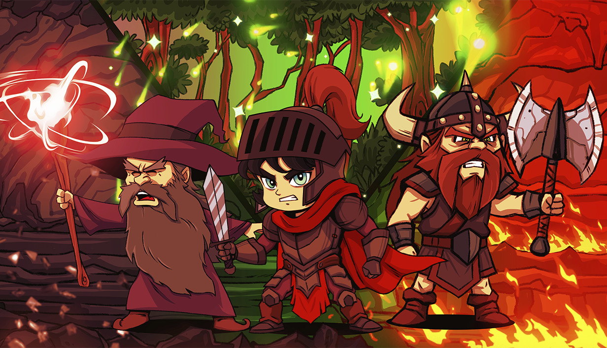
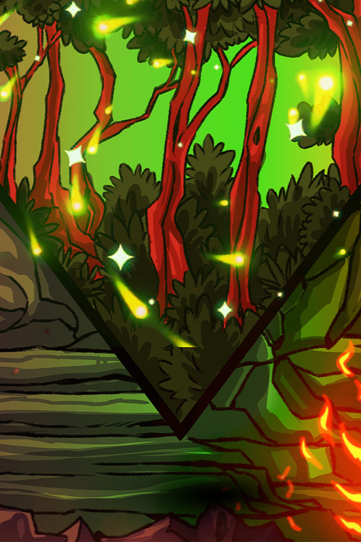
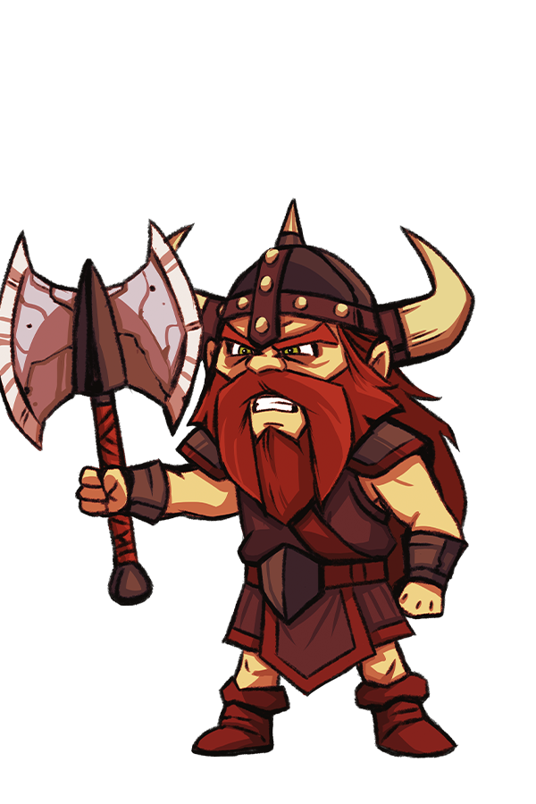

Lone Survivors
Press Kit
Game Overview
Lone Survivors is a survivors-like game with roguelite elements. Survive against
hordes of enemies as you utilize one active ability from one of nine classes
in a quest to escape the island!
Throughout your journey, you'll encounter friends to rescue, bosses to face,
and quests to complete - and even a mushroom man to appease!
Lone Survivors sets itself apart from the rest of the genre with minigames, quests,
an overarching story, but stays true to the heart of the genre with satisfying abilities
and endless enemies to fight!
Key Information
| Developer | GreatColtini Industries |
|---|---|
| Release Date | Februrary 27, 2026 |
| Platforms | PC |
| Website | www.lonesurvivors.ca |
| Contact | coltonmdonk@gmail.com |
Features
- Nine unique classes to choose from, each with their own progression trees!
- Over thirty unique passive abilities, each with five unique upgrades per ability! Wield a Flail, burn your enemies with fire, or have a Defense Drone protect you!
- Level up your weapons enough to unlock their legendary potential, making you a worthy threat on the battlefield!
- Four unique environments, with one campaign and one endless level each!
- Over nine bosses to fight, and more than fifty different enemies to slay!
- Play minigames in your hub, taking a break from the action!
- Compete in Endless mode leaderboards - Prove you're the best Lone Survivor out there!
Screenshots & GIFs


Logos & Key Art

 







About the Developer
I'm a solo developer living just outside of Toronto, Ontario. I have always had a passion for game development - even way back to modding Halo Custom Edition (making custom maps!). For a long time I've wanted to pursue making actual games, and I decided to take the plunge with Lone Survivors around 2 years ago. And here we are!
Additional Links
- Steam: https://store.steampowered.com/app/3629280/Lone_Survivors/
- Itch.io: https://greatcoltini.itch.io/lone-survivors/